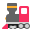

Pelajaranบทที่
Pengangkutan
การคมนาคม
- อต.5/1
- อต.5/6
Kosa kataคำศัพท์
| # | Gambarภาพ | Rumi | Jawi | Maksudความหมาย |
|---|---|---|---|---|
| 1 | basikal | باسيکل | จักรยาน | |
| 2 | motosikal | موتوسيکل | รถจักรยานยนต์ | |
| 3 | kereta | کريتا | รถยนต์ | |
| 4 | bas | بس | รถโดยสาร | |
| 5 |  | kereta api | کريتا اڤي | รถไฟ |
| 6 | kapal terbang | کاڤل تربڠ | เครื่องบิน | |
| 7 | bot | بوت | เรือ | |
| 8 | lapangan terbang | لاڤڠن تربڠ | สนามบิน | |
| 9 | stesen | ستيسين | สถานี |
Mari membacaมาอ่านกันเถอะ
Setiap hari Ahmad pergi ke sekolah dengan basikal. Kakaknya pergi ke kolej dengan bas. Ayahnya pergi ke tempat kerja dengan motosikal.
Sebelum menaiki kenderaan, kita membaca doa naik kenderaan.
Latihanแบบฝึกหัด
Jawab soalan berdasarkan bacaan.ตอบคำถามจากเรื่อง
- Ahmad pergi ke sekolah dengan apa?
- Siapa pergi ke kolej dengan bas?
Lihat jawapanดูเฉลย
basikal; kakaknya
Tulis perkataan bahasa Melayu.เขียนคำภาษามลายู
- รถไฟ
- เครื่องบิน
- สนามบิน
Lihat jawapanดูเฉลย
kereta api, kapal terbang, lapangan terbang
Tulis satu ayat tentang cara kamu pergi ke sekolah.เขียนประโยคบอกว่าตนเองเดินทางไปโรงเรียนอย่างไร
Kuiz Kendiriทดสอบตนเอง
Pilih maksud yang betul. Kuiz boleh diulang; soalan dipilih secara rawak setiap kali.เลือกความหมายที่ถูกต้อง ทำซ้ำได้หลายรอบ ข้อจะสุ่มใหม่ทุกครั้ง
Kad Imbasบัตรคำ
Sentuh kad untuk melihat maksudแตะบัตรเพื่อพลิกดูความหมาย